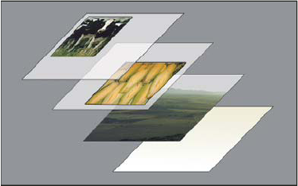

1 Bases de données
1.1 Vocabulaire
| Français | English |
|---|---|
| imprimer | to print |
| fonctionner | to work |
| commencer | to begin (began, begun) |
| une étape | a stage |
| un fichier numérique | a digital file |
| gravé au laser | laser-etched |
| une sous-couche | an under-coat |
| une plaque | a plate |
| charger | to load |
| un rouleau | a roller |
| humecter, humidifier | to dampen |
| de l’huile | oil |
| de l’encre | ink |
| une couverture, un blanchet | a blanket |
| résulter dans, aboutir à | to result in |
| précis, aiguisé | sharp |
| à travers quelque chose | through |
| mince, fin | thin |
| une couche | a layer |
| de la poudre | powder |
| sans | without |
| mieux convenir à | to be best suited for |
| une configuration | a setup |
| tomber, chuter | to fall (fell, fallen) |
| habiter | to live |
| vouloir | to want |
| savoir, connaître | to know |
| déjà | already |
| une équipe | a team |
| avoir l’intention de | to intend |
| un sondage | a poll |
| demander | to ask |
| répondre | to answer |
| un logiciel | a software |
| avec | with |
| sans | without |
| passer, dépenser | to spend |
| l’enfance | childhood |
| taper sur un clavier | to type |
| de nationalité étrangère | foreign |
| un ordinateur portable | a laptop |
| des activités extrascolaires | extracurricular activities |
| un stage | an internship |
| un travail à temps partiel | a part-time job |
| 14 sur 20 | 14 out of 20 |
| une charte chromatique | a colour scheme |
| cocher des cases | to check off boxes |
| un défaut | a drawback |
| devrait | should |
| permettre | to allow |
| étaler | to spread |
| fiable | reliable |
| parfait | spot-on |
| une erreur | a mistake |
| une fournée | a batch |
| brancher | to hook up |
| temps mis pour une tâche | turnaround time |
| vision informée | insight |
| intelligent | smart |
| avoir besoin de | to need |
| être important | to matter |
| être logique | to make sense |
| précis, exact | accurate |
| donner, fournir | to provide |
| impeccable | crisp |
| la manière | the way |
| une commande, une impression | a run |
| un coût | a cost |
| la meilleure solution | the right fit |
| bas | low |
| pas cher | cheap |
| améliorer | to improve |
| personnalisé | custom |
| une finition | a finish |
| exiger, demander | to require |
| passer (du temps) | to spend |
| un clavier | a keyboard |
| une usine | a factory |
| avoir lieu, se dérouler | to take place |
| briller | to shine |
| un bâtonnet | a rod |
| un cône | a cone |
| duper, rouler, tromper | to trick |
| un fabricant | a manufacturer |
| une onde | a wave |
| se chevaucher | to overlap |
| une cellule | a cell |
| rapide | fast |
| seul | alone |
| posséder | to own |
| une agence de communication | an ad(vertising) agency |
| un pli | a fold |
| une finition brillante | a glossy finish |
| une finition mate | a matte finish |
| le grammage | paper weight |
| un exemplaire | a copy |
| le recto | the front |
| le verso | the back |
| recto-verso | both sides |
| relier (un livre) | to bind (bound, bound) |
| dos carré-collé | perfect binding |
| piqûre à cheval | saddle-stitched |
| dépliants | brochures |
| cartes de visite | business cards |
| brochures | booklets |
| autocollants | stickers |
| équipement, installation | facility |
| taille | size |
| alimenter | to feed (fed, fed) |
| une fois que | once |
| glisser | to glide |
| des agrafes | staples |
| le dos (d’un livre) | the spine |
| reliure à spirale | coil binding |
| un massicot | a trimmer |
| expédier | to ship out |
| stockage | storage |
| deux fois | twice |
1.2 Définitions
| Expression | Definition |
|---|---|
| Accordion Fold | A fold constructed by folding a sheet three times in a zig-zag pattern, creating a piece that expands like an accordion. |
| Double Gate Fold | A fold constructed by folding a sheet inwards on each side, creating two side panels that open like doors, and then folding the sheet in half. |
| Double Parallel Fold | A fold, also known as a parallel center, constructed by folding a sheet in half, and then in half once again. |
| Flat (No Folding) | No folding or scoring |
| Gate Fold | A fold constructed by folding a sheet inwards on each side, creating two side panels that open like doors or gates. |
| Half-Fold | A fold, also known as a book fold, constructed by folding a sheet once, creating two equal halves. |
| Right-Angle Half Fold | A fold, also known as a French fold, constructed by folding a sheet in half horizontally, and then in half once again vertically. |
| to coat stg | to cover or spread with a finishing, protecting, or enclosing layer |
| to dampen stg | to make stg moderately wet |
| Tri-Fold / Letter-Fold | A fold, also known as a letter-fold, constructed by folding a sheet twice like a mailed letter. |
| Z-Fold | A fold, also known as a fan fold or zig-zag fold, constructed by folding a sheet twice in the shape of the letter Z. |
1.3 Traductions
| Français | English |
|---|---|
| Connais-tu déjà ton option? | Do you already know your option? |
| As-tu utilisé ce logiciel l’année dernière? | Did you use this software last year? |
| Pourrais-tu me prêter ton stylo s’il te plaît? | Could you lend me your pen please? |
| Est-ce que tu travailles, là ? | Are you working right now? |
| Qu’ont répondu les étudiants la semaine dernière? | What did the students answer last week? |
| La semaine dernière, 4 étudiants sur 19 ont répondu “non“. | Last week, 4 students out of 19 answered “no“. |
| Où as-tu travaillé pendant ton stage ? | Where did you work during your internship ? |
| J’ai travaillé dans une entreprise en banlieue. | I worked in a company in the suburbs. |
| As-tu parlé aux clients ? | Did you speak to the customers? |
| J’ai parlé à beaucoup de clients. | I spoke to a lot of customers. |
| J’ai passé mon enfance à Paris. | I spent my childhood in Paris |
| J’ai fait un stage de deux mois dans une entreprise l’année dernière. | I did an internship for two months in a company last year |
| Je voudrais faire un stage dans une entreprise près de chez moi. | I would like to do an internship in a company close to home. |
| Pourquoi n’as-tu pas appelé cette entreprise? | Why did you not call that company? |
| Je voudrais faire un stage dans une entreprise près de chez moi | I would like to do an internship in a company close to home. |
| Je voudrais commander 2500 dépliants | I would like to order 2500 folded leaflets. |
| Quand pouvez-vous les expédier? | When can you ship them out? |
| Le manager veut que nous travaillions dans l’entreprise | The manager wants us to work in the company |
| Ces cartes de visite doivent être imprimées avant la fin de la semaine | These business cards must be printed before the end of the week. |
| Le client veut que nous expédiions la commande demain. | The customer wants us to ship out the order tomorrow. |
| J’aimerais que ce livre soit relié en piqûre à cheval. | I would like this book to be saddle-stitched. |
1.4 Prononciation
| Word | Sound | Stress | Received Pronunciation | General American |
|---|---|---|---|---|
| require | /010/ | /ri.’kwaɪ.ə/ | /ˌriː.’kwaɪ.ər/ | |
| cheap | /1/ | /tʃiːp/ | /tʃiːp/ | |
| provide | /01/ | /prə.’vaɪd/ | /prə.’vaɪd/ | |
| offset | /10/ | /’ɒf.set/ | /ɒf.’set/ | |
| accurate | /100/ | /’æk.jər.ət/ | /’æk.jər.ət/ | |
| matter | /10/ | /’mæt.ə/ | /’mæt.ər/ | |
| finish | /10/ | /’fɪn.ɪʃ/ | /’fɪn.ɪʃ/ | |
| digital | /100/ | /’dɪdʒ.ɪt.əl/ | /’dɪdʒ.ɪt.əl/ | |
| scheme | /1/ | /skiːm/ | /skiːm/ | |
| allow | /01/ | /ə.’laʊ/ | /ə.’laʊ/ | |
| spread | /1/ | /spred/ | /spred/ | |
| reliable | /0100/ | /ri.’laɪ.əb.əl/ | /ri.’laɪ.əb.əl/ | |
| agency | /100/ | /’eɪdʒ.əns.i/ | /’eɪdʒ.əns.i/ | |
| bind | /1/ | /baɪnd/ | /baɪnd/ | |
| fold | /1/ | /fəʊld/ | /foʊld/ | |
| company | /100/ | /’kʌmp.ən.i/ | /’kʌmp.ən.i/ | |
| booklet | /10/ | /’bʊk.lət/ | /’bʊk.lət/ | |
| brochure | /10/ | /’brəʊʃ.ə/ | /brəʊʃ.’ʊr/ | |
| stitch | /1/ | /stɪtʃ/ | /stɪtʃ/ | |
| gate | /1/ | /geɪt/ | /geɪt/ | |
| market | /10/ | /’mɑːk.ɪt/ | /’mɑːk.ɪt/ | |
| facility | /0100/ | /fə.’sɪl.ət.i/ | /fə.’sɪl.ət.i/ | |
| once | /1/ | /wʌns/ | /wʌns/ | |
| staple | /10/ | /’steɪp.əl/ | /’steɪp.əl/ | |
| box | /1/ | /bɒks/ | /bɑːks/ | |
| sheet | /1/ | /ʃiːt/ | /ʃiːt/ | |
| twice | /1/ | /twaɪs/ | /twaɪs/ | |
| violet | /100/ | /’vaɪ.əl.ət/ | /’vaɪ.əl.ət/ | |
| retina | /100/ | /’ret.ɪn.ə/ | /’ret.ɪn.ə/ | |
| detection | /010/ | /di.’tek.ʃən/ | /di.’tek.ʃən/ | |
| signal | /10/ | /’sɪg.nəl/ | /’sɪg.nəl/ | |
| equal | /10/ | /’iːk.wəl/ | /’iːk.wəl/ | |
| manufacture | /2010/ | /ˌmæn.ju.’fæk.tʃə/ | /ˌmæn.ju.’fæk.tʃər/ | |
| singer | /10/ | /’sɪŋ.ə/ | /’sɪŋ.ər/ | |
| biology | /0100/ | /baɪ.’ɒl.ədʒ.i/ | /baɪ.’ɑːl.ədʒ.i/ | |
| region | /10/ | /’riːdʒ.ən/ | /’riːdʒ.ən/ | |
| interact | /201/ | /ˌɪnt.ər.’ækt/ | /ˌɪnt.ər.’ækt/ |
1.5 Échéances
| 28/09/2021 | ERPC3 : Préparer la présentation orale des résultats de sondage |
| 30/09/2021 | ERPC2 : Préparer la présentation orale des résultats de sondage |
| 05/10/2021 | ERPC1 : Préparer la présentation orale des résultats de sondage |
| 23/11/2021 | Interrogation de vocabulaire et de traduction (ERPC3) |
| 25/11/2021 | Interrogation de vocabulaire et de traduction (ERPC2) |
| 30/11/2021 | Interrogation de vocabulaire et de traduction (ERPC1) |
1.6 Flashcards
| Images | Expressions |
|---|---|

|
a box |
| a cell | |

|
a display |
| a fan deck | |
| a gate | |

|
a greeting card |
|  | a layer |
| a sheet | |
| a singer | |
| a trimmer | |
| a wave | |
| accordian fold | |

|
book spines |
| coil binding | |
| digital press | |
| double gate fold | |

|
double parallel fold |
| gate fold | |
| half fold | |

|
ink |
| layers | |

|
offset printing |
| perfect binding | |
| powder | |

|
printing plates |

|
right angle half fold |
|
|
rubber blankets |
| saddle stitched | |
| staples | |
| the retina | |
| three filters overlapping | |

|
to check off a box |
| to cover | |
| to etch | |
| to glide | |
| to shine | |
| to skip a step | |
| trifold | |
| z fold |